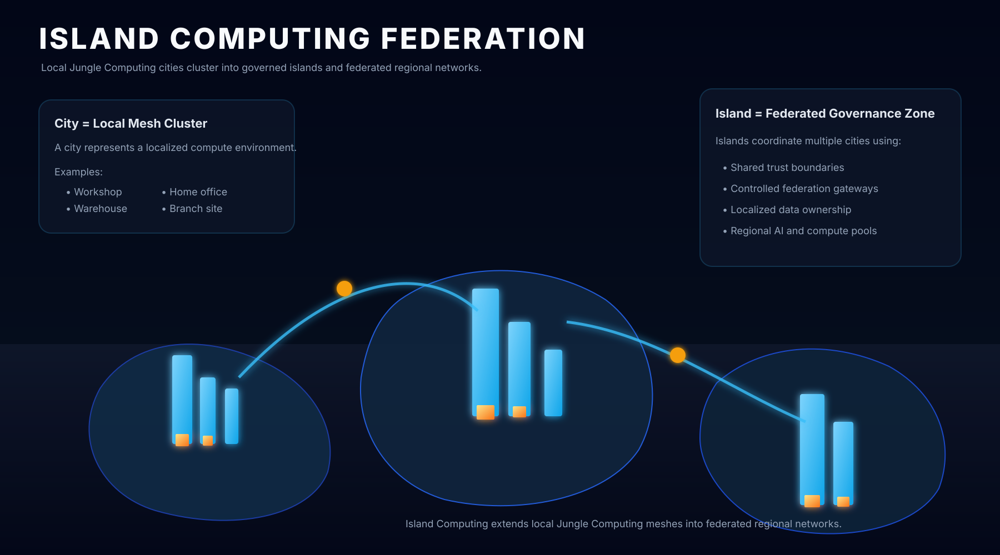

Towers
Each participating computer is represented as a tower whose scale reflects its compute, storage, and network capacity.
Browser-first distributed architecture
Jungle Computing reframes the web from centralized request handling into a visual, peer-to-peer mesh where browsers compute, store, synchronize, route, and collaborate.
The concept
The browser becomes a compute node, data replica, visualization surface, and network participant. A small authority layer can still exist for identity, signalling, and discovery, but the work no longer has to live permanently in the middle.
Each participating computer is represented as a tower whose scale reflects its compute, storage, and network capacity.
Every tower shares the same four foundation layers: security, storage, peer communication, and compute abstraction.
Local meshes become cities where latency is low, synchronization is fast, and peers can collaborate directly.
Federated clusters become islands connected through controlled gateways rather than unrestricted central flooding.
From monolith to mesh
Browsers send requests upward, servers process nearly everything, and the database becomes the permanent center of truth and pressure.
Tower anatomy
The orange floors are fixed across the whole ecosystem. The blue floors above them can host AI agents, workflows, APIs, visualizations, repair systems, or any application-specific logic.
Select a floor or click the tower to inspect how that layer contributes to the node.
City mesh simulation
This simulation shows how a set of devices can discover neighbors, exchange traffic, route a compute task to a stronger node, and continue operating when part of the city goes offline.
Click a node in the 3D city to inspect its device type, role, and active connections.
Island computing
An island may represent a branch, workshop group, warehouse, school, sovereign region, or datacenter cluster. It can define its own trust, data policy, and gateway behavior while still connecting outward.

Each island can continue operating if a wide-area bridge becomes unreliable or goes offline completely.
Instead of routing every transaction through a central cloud, islands expose selected routes, policies, and trust relationships.
When a bridge reconnects, queued state can synchronize back into the federation without abandoning local-first operation.
Documentation and direction
What Jungle Computing is, why it exists, and how the city metaphor works.
The architectural transition from centralized browser apps to direct peer communication.
The four shared layers, browser constraints, node roles, and synchronization model.
The premium neon city direction, interactive expectations, and educational experience goals.